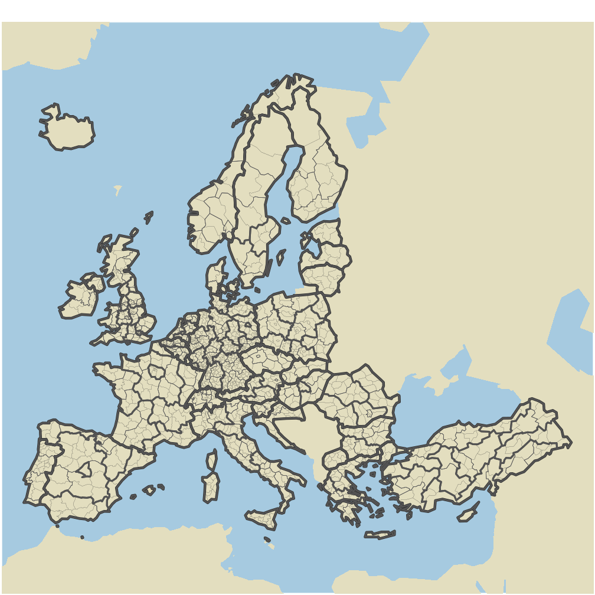
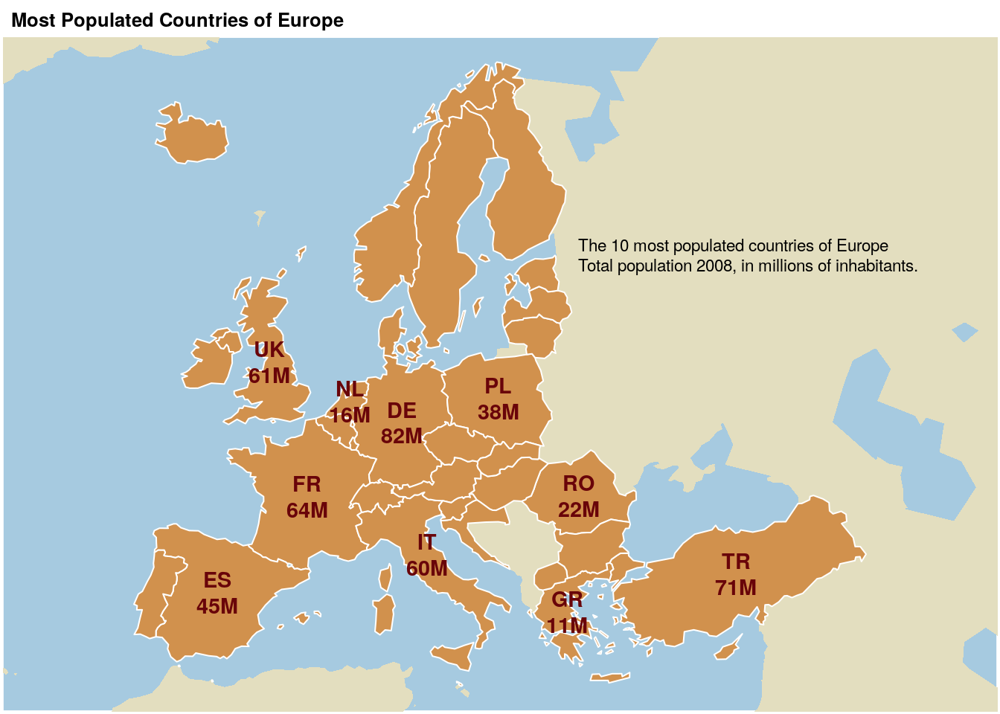
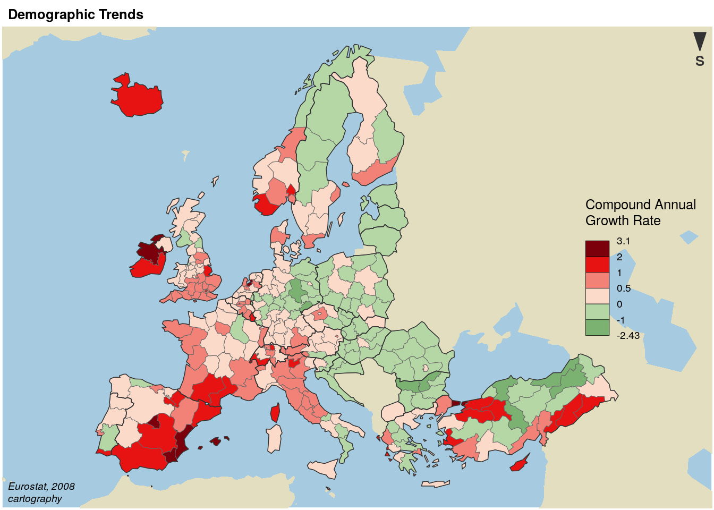
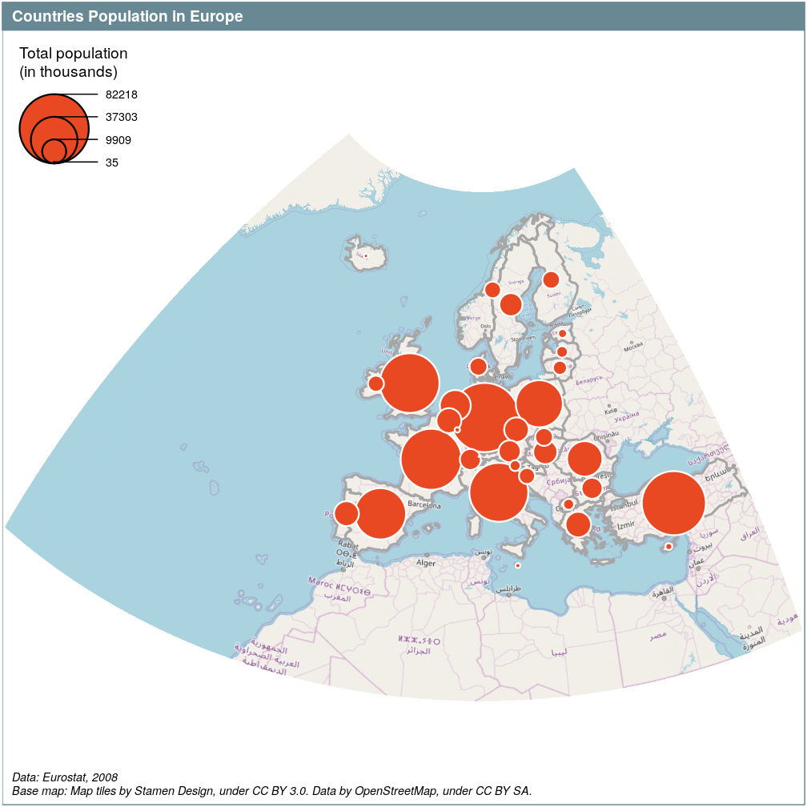
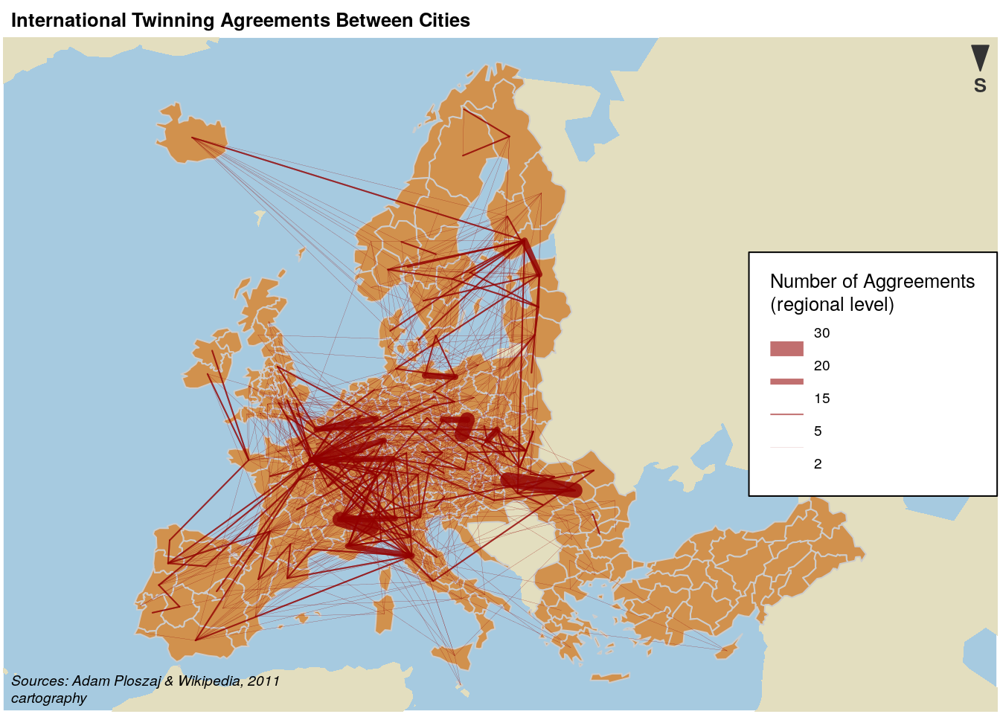
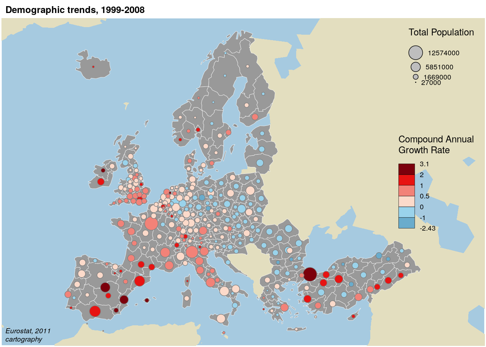
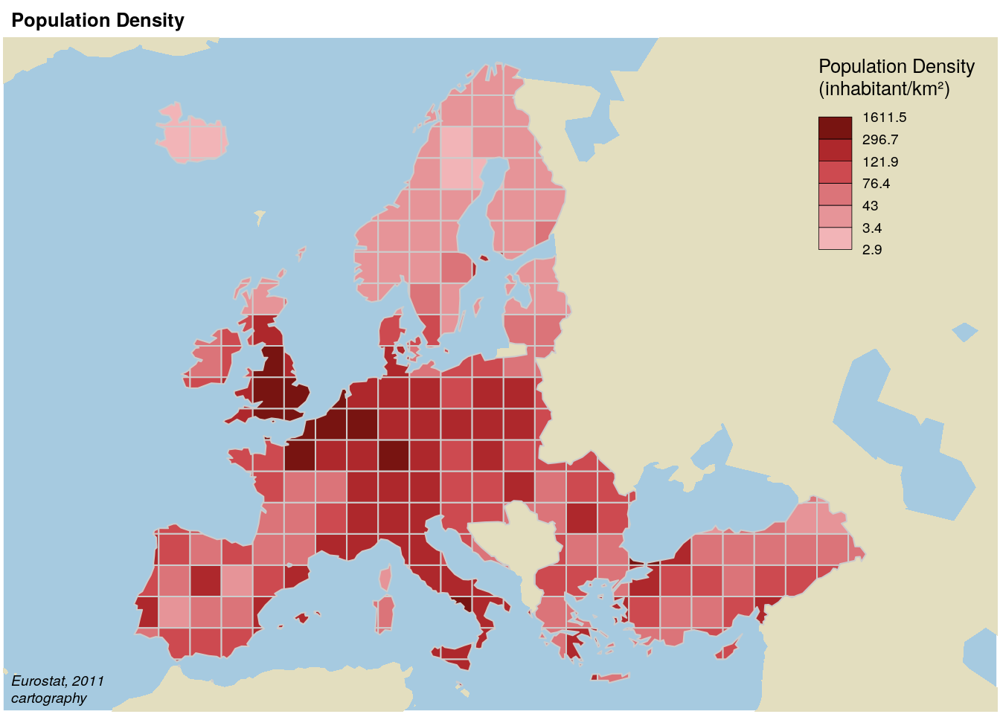

Examples of Thematic Maps
Timothée Giraud, Nicolas Lambert
2019-01-08
Source:vignettes/examples.Rmd
examples.RmdHow to Import a Geospatial Vector Data File
The rgdal Way
library(rgdal)
## Le chargement a nécessité le package : sp
## rgdal: version: 1.3-6, (SVN revision 773)
## Geospatial Data Abstraction Library extensions to R successfully loaded
## Loaded GDAL runtime: GDAL 2.1.2, released 2016/10/24
## Path to GDAL shared files: /usr/share/gdal/2.1
## GDAL binary built with GEOS: TRUE
## Loaded PROJ.4 runtime: Rel. 4.9.3, 15 August 2016, [PJ_VERSION: 493]
## Path to PROJ.4 shared files: (autodetected)
## Linking to sp version: 1.3-1
# path to the ESRI Shapefile embedded in cartography
path_to_file <- system.file("shape/martinique.shp", package="cartography")
mtq <- readOGR(dsn = path_to_file, verbose = FALSE)
class(mtq)
## [1] "SpatialPolygonsDataFrame"
## attr(,"package")
## [1] "sp"Europe Dataset
library(cartography)
# Load data
data(nuts2006)
# Plot a layer with the extent of the EU28 countries with only a background color
plot(nuts0.spdf, border = NA, col = NA, bg = "#A6CAE0")
# Plot non european space
plot(world.spdf, col = "#E3DEBF", border=NA, add=TRUE)
# Plot a layer of countries borders
plot(nuts0.spdf, border = "grey20", lwd = 3, add = TRUE)
# Plot a layer of NUTS1
plot(nuts1.spdf, border = "grey30", lwd = 2, add = TRUE)
# Plot a layer of NUTS2
plot(nuts2.spdf, border = "grey40", lwd = 0.5, add = TRUE)
# Plot a layer of NUTS3
plot(nuts3.spdf, border = "grey20", lwd = 0.1, add = TRUE)
Label Map
# Layout plot
layoutLayer(title = "Most Populated Countries of Europe", # title of the map
author = "", # no author text
sources = "", # no source text
scale = NULL, # no scale
col = NA, # no color for the title box
coltitle = "black", # color of the title
frame = FALSE, # no frame around the map
bg = "#A6CAE0", # background of the map
extent = nuts0.spdf) # set the extent of the map
# Non European space
plot(world.spdf, col = "#E3DEBF", border = NA, add = TRUE)
# European (EU28) countries
plot(nuts0.spdf, col = "#D1914D",border = "white", lwd = 1, add = TRUE)
# Selection of the 10 most populated countries of Europe
dflab <- nuts0.df[order(nuts0.df$pop2008, decreasing = TRUE),][1:10,]
# Label creation
dflab$lab <- paste(dflab$id, "\n", round(dflab$pop2008/1000000,0), "M", sep ="")
# Label plot of the 10 most populated countries
labelLayer(spdf = nuts0.spdf, # SpatialPolygonsDataFrame used to plot he labels
df = dflab, # data frame containing the lables
txt = "lab", # label field in df
col = "#690409", # color of the labels
cex = 0.9, # size of the labels
font = 2) # label font
# Add an explanation text
text(x = 5477360, y = 4177311, labels = "The 10 most populated countries of Europe
Total population 2008, in millions of inhabitants.", cex = 0.7, adj = 0)
Choropleth Map
# Compute the compound annual growth rate
nuts2.df$cagr <- (((nuts2.df$pop2008 / nuts2.df$pop1999)^(1/9)) - 1) * 100
# Set a custom color palette
cols <- carto.pal(pal1 = "green.pal", # first color gradient
n1 = 2, # number of colors in the first gradiant
pal2 = "red.pal", # second color gradient
n2 = 4) # number of colors in the second gradiant
# Plot a layer with the extent of the EU28 countries with only a background color
plot(nuts0.spdf, border = NA, col = NA, bg = "#A6CAE0")
# Plot non european space
plot(world.spdf, col = "#E3DEBF", border=NA, add=TRUE)
# Plot the compound annual growth rate
choroLayer(spdf = nuts2.spdf, # SpatialPolygonsDataFrame of the regions
df = nuts2.df, # data frame with compound annual growth rate
var = "cagr", # compound annual growth rate field in df
breaks = c(-2.43,-1,0,0.5,1,2,3.1), # list of breaks
col = cols, # colors
border = "grey40", # color of the polygons borders
lwd = 0.5, # width of the borders
legend.pos = "right", # position of the legend
legend.title.txt = "Compound Annual\nGrowth Rate", # title of the legend
legend.values.rnd = 2, # number of decimal in the legend values
add = TRUE) # add the layer to the current plot
# Plot a layer of countries borders
plot(nuts0.spdf,border = "grey20", lwd=0.75, add=TRUE)
# Layout plot
layoutLayer(title = "Demographic Trends", author = "cartography",
sources = "Eurostat, 2008", frame = TRUE, col = NA,
scale = NULL,coltitle = "black",
south = TRUE) # add a south arrow
Base Map and Proportional Symbols
## Plot OpenStreetMap tiles as basemap
# Download the tiles, nuts0.spdf extent
EUosm <- getTiles(x = nuts0.spdf, type = "osm", zoom = 4)
# Plot the tiles
tilesLayer(EUosm)
# Plot countries
plot(nuts0.spdf, border = "grey65", lwd = 2, add=TRUE)
# Plot countries population
nuts0.df$pop <- nuts0.df$pop2008 / 1000
propSymbolsLayer(spdf = nuts0.spdf, # SpatialPolygonsDataFrame of the countries
df = nuts0.df, # data frame of the regions
var = "pop", # population
symbols = "circle", # type of symbol
border = "white", # color of the symbols borders
lwd = 1.5, # width of the symbols borders
legend.pos = "topleft",
legend.title.txt = "Total population\n(in thousands)")
# # Layout plot
layoutLayer(title = "Countries Population in Europe",
sources = "Data: Eurostat, 2008",
author = "Base map: Map tiles by Stamen Design, under CC BY 3.0. Data by OpenStreetMap, under CC BY SA.",
scale = NULL, frame = TRUE,
col = "#688994") # color of the frame
Link/Flow Map
# Create a link layer from the twincities data frame
head(twincities.df)
## i j fij
## 1 DE14 AT11 1
## 2 DE21 AT11 1
## 3 DE23 AT11 1
## 4 DE26 AT11 2
## 5 DE91 AT11 1
## 6 DEB3 AT11 1
# twincities contains links between Nuts 2 regions
# ?twincities.df
twincities.spdf <- getLinkLayer(x = nuts2.spdf, # SpatialPolygonsDataFrame of Nuts2
df = twincities.df) # links data frame
# Plot a layer with the extent of the EU28 countries with only a background color
plot(nuts0.spdf, border = NA, col = NA, bg = "#A6CAE0")
# Plot non european space
plot(world.spdf, col = "#E3DEBF", border=NA, add=TRUE)
# Plot Nuts2 regions
plot(nuts2.spdf, col = "#D1914D",border = "grey80", add=TRUE)
# # Plot links with graduated sizes
gradLinkLayer(x = twincities.spdf, # SpatialLinesdataFrame of the links
df = twincities.df, # data frame of the links
var = "fij", # name of the variable used to plot the links widths
breaks = c(2,5,15,20,30), # list of breaks
lwd = c(0.1,1,4,10), # list of widths
col = "#92000090", # color of the links
legend.pos = "right", legend.frame = TRUE,
legend.title.txt = "Number of Aggreements\n(regional level)",
add = TRUE)
# Plot the layout
layoutLayer(title = "International Twinning Agreements Between Cities",
author = "cartography", sources = "Sources: Adam Ploszaj & Wikipedia, 2011",
scale = NULL, south = TRUE, frame = TRUE, col = NA,
coltitle = "black")
Proportional Symbols and Choropleth Map
# Compute the compound annual growth rate
nuts2.df$cagr <- (((nuts2.df$pop2008 / nuts2.df$pop1999)^(1/9)) - 1) * 100
# Plot a layer with the extent of the EU28 countries with only a background color
plot(nuts0.spdf, border = NA, col = NA, bg = "#A6CAE0")
# Plot non european space
plot(world.spdf, col = "#E3DEBF", border = NA, add = TRUE)
# Plot Nuts2 regions
plot(nuts2.spdf, col = "grey60",border = "white", lwd = 0.4, add = TRUE)
# Set a custom color palette
cols <- carto.pal(pal1 = "blue.pal", n1 = 2, pal2 = "red.pal", n2 = 4)
# Plot symbols with choropleth coloration
propSymbolsChoroLayer(spdf = nuts2.spdf,
df = nuts2.df,
var = "pop2008", # field in df to plot the symbols sizes
inches = 0.1, # set the symbols sizes
var2 = "cagr", # field in df to plot the colors
col = cols, # symbols colors
breaks = c(-2.43,-1,0,0.5,1,2,3.1), # breaks
border = "grey50", # border colors of the symbols
lwd = 0.75, # symbols width
legend.var.pos = "topright", # size legend position
legend.var.values.rnd = -3, # size legend value roundinf
legend.var.title.txt = "Total Population", # size legend title
legend.var.style = "e", # size legend type
legend.var2.pos = "right", # color legend position
legend.var2.title.txt = "Compound Annual\nGrowth Rate") # legend title
# layout
layoutLayer(title = "Demographic trends, 1999-2008", coltitle = "black",
sources = "Eurostat, 2011", scale = NULL,
author = "cartography", frame ="", col = NA)
Discontinuities Map
# Get a SpatialLinesDataFrame of countries borders
nuts0.contig <- getBorders(x = nuts0.spdf)
class(nuts0.contig)
## [1] "sf" "data.frame"
# Get the GDP per capita
nuts0.df$gdpcap <- nuts0.df$gdppps2008/nuts0.df$pop2008*1000000
# Plot a layer with the extent of the EU28 countries with only a background color
plot(nuts0.spdf, border = NA, col = NA, bg = "#A6CAE0")
# Plot non european space
plot(world.spdf, col = "#E3DEBF", border=NA, add=TRUE)
# Plot GDP per capita with a choropleth layer
choroLayer(spdf = nuts0.spdf, df = nuts0.df, var = "gdpcap", border = "grey80",
col = carto.pal(pal1 = "kaki.pal", n1 = 6), method = "quantile",
nclass = 6, add=TRUE, legend.pos = "right",
legend.values.rnd = -2,
legend.title.txt = "GDP per Capita\n(in euros)")
# Plot discontinuities
discLayer(x = nuts0.contig, # sf of borders
df = nuts0.df, # data frame on countries
var = "gdpcap", # variable used to compute discontinuties
type = "rel", # type of discontinuity measure
method="equal", # discretisation of discontinuities
nclass=4, # number of discontinuities classes
threshold = 0.5, # representation threshold of discontinuities
sizemin = 0.5, # minimum size of discontinuities lines
sizemax = 6, # maximum size of discontinuities lines
col="red", # color of the lines
legend.values.rnd = 1,
legend.title.txt = "Discontinuities in \nGDP per Capita\n(relative)",
legend.pos = "topright",
add=TRUE)
# Layout
layoutLayer(title = "Wealth Disparities in Europe", coltitle = "black",
sources = "Eurostat, 2011", scale = NULL,
author = "cartography", frame ="", col = NA)
Gridded Map
# Create a grid layer
nuts2.spdf@data <- nuts2.df
mygrid <- getGridLayer(x = nuts2.spdf, # SpatialPolygonsDataFrame
cellsize = 200000 * 200000, # output cell size, in map units (200 km)
var = "pop2008") # variable to adapt to the grid
# Plot dentsity of population
## conversion from square meter to square kilometers
mygrid$densitykm <- mygrid$pop2008 * 1000 * 1000 / mygrid$gridarea
# Plot a layer with the extent of the EU28 countries with only a background color
plot(nuts0.spdf, border = NA, col = NA, bg = "#A6CAE0")
# Plot non european space
plot(world.spdf, col = "#E3DEBF", border=NA, add=TRUE)
# Set a custom color palette
cols <- carto.pal(pal1 = "wine.pal", n1 = 6)
# Plot the gridded population density
choroLayer(x = mygrid, var = "densitykm",
border = "grey80", col = cols, legend.pos = "topright",
method = "q6", add = TRUE, legend.values.rnd = 1,
legend.title.txt = "Population Density\n(inhabitant/km²)")
# Layout
layoutLayer(title = "Population Density", coltitle = "black",
sources = "Eurostat, 2011", scale = NULL,
author = "cartography", frame ="", col = NA)